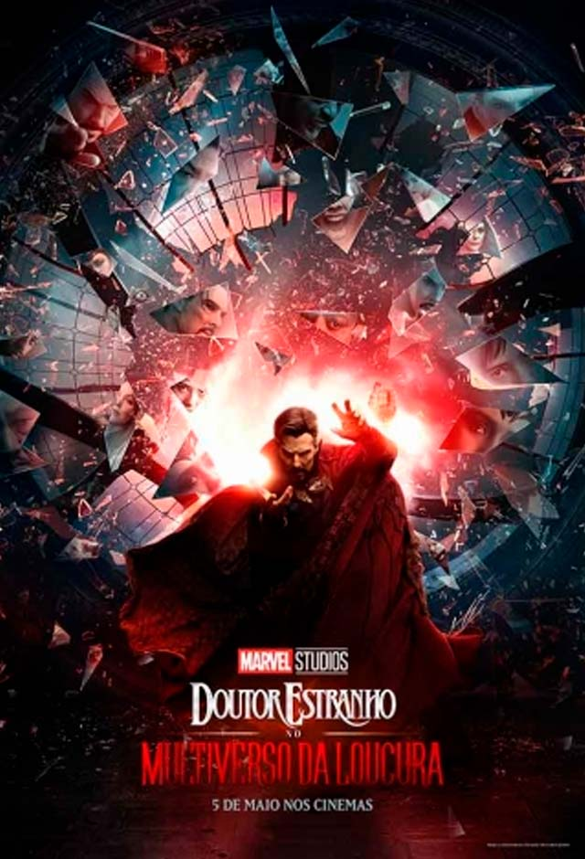

Escolha a imagem que deseja acessar

Escolha a imagem que deseja acessar |
||
| Pagina atual | Pagina dois | Pagina trez |
|---|---|---|
|  |
|
|
Doutor Estranho |
| Sinopse Não recomendado para menos de 12 anos Stephen Strange (Benedict Cumberbatch) leva uma vida bem sucedida como neurocirurgião. Sua vida muda completamente quando sofre um acidente de carro e fica com as mãos debilitadas. Devido a falhas da medicina tradicional, ele parte para um lugar inesperado em busca de cura e esperança, um misterioso enclave chamado Kamar-Taj, localizado em Katmandu. Lá descobre que o local não é apenas um centro medicinal, mas também a linha de frente contra forças malignas místicas que desejam destruir nossa realidade. Ele passa a treinar e adquire poderes mágicos, mas precisa decidir se vai voltar para sua vida comum ou defender o mundo. |
|---|